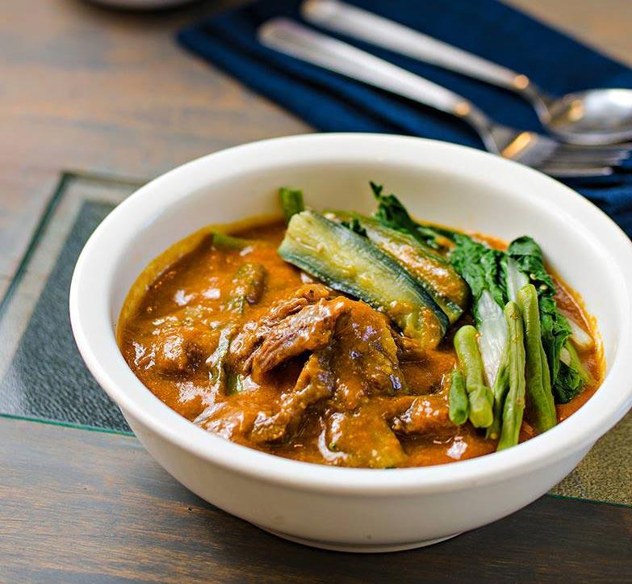

Kare-Kare (Oxtail Stew)

Description
Kare-kare is a Philippine stew (kare derives from "curry") that features a thick savory peanut sauce. It is generally made from a base of stewed oxtail, beef tripe, pork hocks, calves' feet, pig's feet or trotters, various cuts of pork, beef stew meat, and occasionally offal. Vegetables, such as eggplant, Chinese cabbage, or other greens, daikon, green beans, okra, and asparagus beans, are added. The stew is flavored with ground roasted peanuts or peanut butter, onions, and garlic. It is colored with annatto and can be thickened with toasted or plain ground rice.[1][2] Variations of kare-kare can be made with seafood, such as prawns, squid, and mussels, or exclusively from vegetables.
Ingredients
- 1 1/2 lb ox tail
- 1 lb beef tripe
- 1 piece Knorr Beef Cube
- 1 bunch pechay (bok choy)
- 1 eggplant, sliced
- 12 long green beans, cut into 2 in pieces
- 3/4 c peanut butter
- 1/2 c annatto seeds
- 1/4 c fermented fish/shrimp paste
- 1 tsp cornstarch
- 1 yellow onion
- 4 cloves garlic, crushed
- 3 tbsp cooking oil
- 2 qt water
Steps
- Boil 1 quart water in a pressure cooker. Add oxtail and tripe. Continue to boil in medium heat for 20 minutes. Note: do not cover the cooker.
- Drain the water use to boil the beef. Pour 1 quart of fresh water into the pressure cooker. Cover and pressure cook for 25 minutes.
- Prepare annatto water by combining 1 cup of hot water with annatto seeds. Stir. Soak seeds for 10 minutes. Remove the seeds by filtering using a kitchen ,sieve. Set aside.
- Heat oil in a cooking pot. Saute onion and garlic until onion softens.
- Pour beef stock into the pot. Note: this is the liquid used to pressure cook the oxtail and tripe. Let boil.
- Add peanut butter. Stir until well blended.
- Add Knorr Beef Cube. Stir.
- Pour annatto water into the pot and then add oxtail and beef tripe. Let the mixture re-boil. Cook for 5 to 7 minutes.
- Combine cornstarch with 1/4 cup water. Stir. Pour mixture into the cooking pot. Stir.
- Add eggplant and sitaw. Cook for 5 minutes.
- Add pechay. Cover the pot and cook for 3 to 4 minutes.
- Transfer to a serving bowl. Serve!
Back